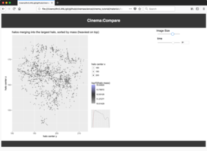
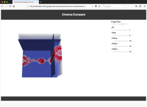
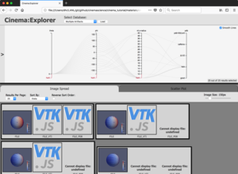

Cinema Tutorial for Supercomputing 2019 in Denver, CO. This tutorial is intended to be run in a virtual machine that the attendees can download and run. An alternative is to follow along with the slides and examples shown here.
These are examples of simple Cinema databases, showing the flexibility and power of the image-based approach. The last example shows a multi-artifact database, with data-specific viewers. These databases are not part of the tutorial, but are included to demonstrate Cinema.
|  |  |  |
| Halo Dataset: An example dataset showing a UI-like database assempling several data views into one database. | Volume Dataset: An example showing a richer set of database attributes manipulable by sliders. | Multi-artifact: An example showing a Cinema database with several types of data extracts, and viewers for these types. |